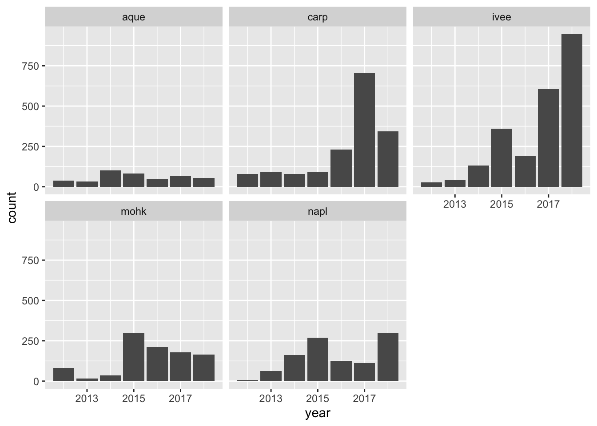
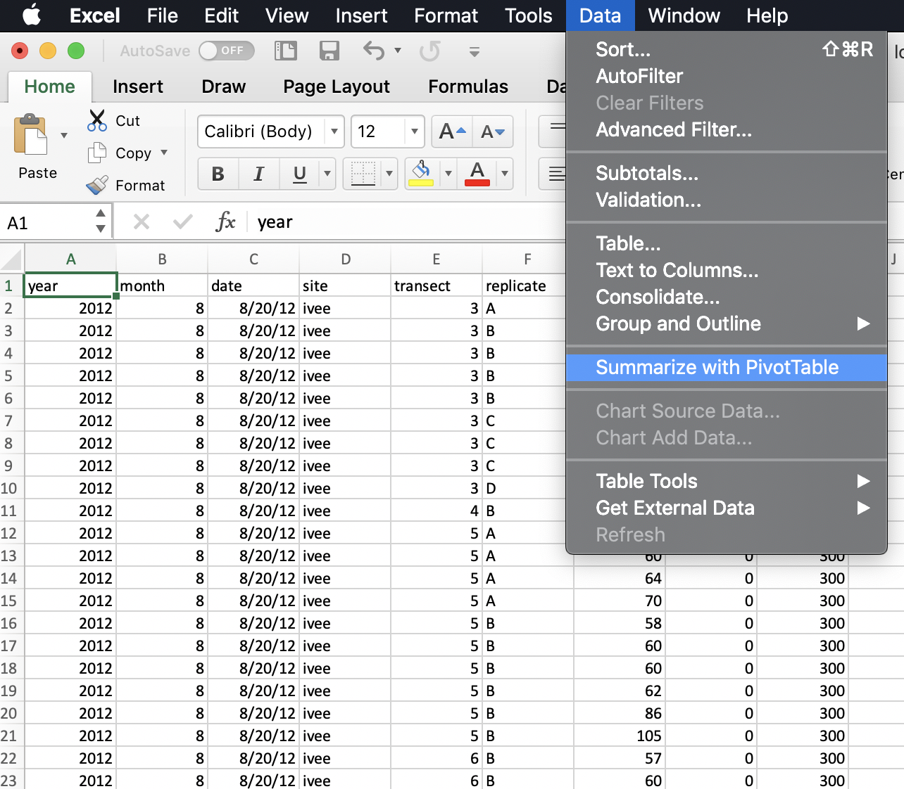
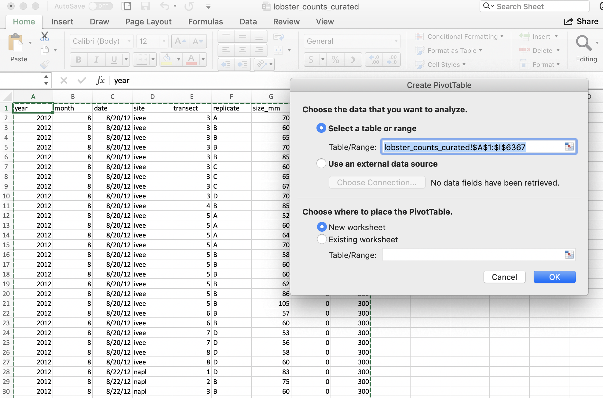

Chapter 7 dplyr and Pivot Tables
7.1 Summary
Pivot tables are powerful tools in Excel for summarizing data in different ways. We will create these tables using the group_by and summarize functions from the dplyr package (part of the Tidyverse). We will also learn how to format tables and practice creating a reproducible report using RMarkdown and sharing it with GitHub.
7.2 Objectives
In R, we can use dplyr for pivot tables by using 2 main verbs in combination: group_by and summarize. We will also continue to emphasize reproducibility in all our analyses.
- Discuss pivot tables in Excel
- Introduce
group_by() %>% summarize()from thedplyrpackage - Format tables with the
DTandknitrpackages - Practice our reproducible workflow with RMarkdown and GitHub
7.3 Resources
- dplyr.tidyverse.org
- R for Data Science: Transform Chapter
- Intro to Pivot Tables I-III by Excel Campus (YouTube)
7.4 Lesson
7.4.1 Setup
Let’s start a new RMarkdown file, I’ll call mine pivot_lobsters.Rmd.
In the setup chunk, let’s attach our libraries and read in our lobster data.
## attach libraries
library(tidyverse)
## read in data
lobsters <- read_csv("data/lobster_counts_curated.csv")Let’s add a code chunk to explore the data by looking at some summary statistics and making a simple plot.
## # A tibble: 6 x 9
## year month date site transect replicate size_mm num_ao area
## <dbl> <dbl> <chr> <chr> <dbl> <chr> <dbl> <dbl> <dbl>
## 1 2012 8 8/20/12 ivee 3 A 70 0 300
## 2 2012 8 8/20/12 ivee 3 B 60 0 300
## 3 2012 8 8/20/12 ivee 3 B 65 0 300
## 4 2012 8 8/20/12 ivee 3 B 70 0 300
## 5 2012 8 8/20/12 ivee 3 B 85 0 300
## 6 2012 8 8/20/12 ivee 3 C 60 0 300## year month date site
## Min. :2012 Min. :8.000 Length:6366 Length:6366
## 1st Qu.:2015 1st Qu.:8.000 Class :character Class :character
## Median :2017 Median :8.000 Mode :character Mode :character
## Mean :2016 Mean :8.017
## 3rd Qu.:2018 3rd Qu.:8.000
## Max. :2018 Max. :9.000
##
## transect replicate size_mm num_ao
## Min. :1.000 Length:6366 Min. : 18.00 Min. : 0.00000
## 1st Qu.:2.000 Class :character 1st Qu.: 65.00 1st Qu.: 0.00000
## Median :4.000 Mode :character Median : 75.00 Median : 0.00000
## Mean :3.806 Mean : 73.02 Mean : 0.08121
## 3rd Qu.:5.000 3rd Qu.: 82.00 3rd Qu.: 0.00000
## Max. :9.000 Max. :183.00 Max. :10.00000
## NA's :6
## area
## Min. :300
## 1st Qu.:300
## Median :300
## Mean :300
## 3rd Qu.:300
## Max. :300
## 
In this data set, every row is a unique observation. This is called “uncounted” data; you’ll see there is no row for how many lobsters were seen because each row is an observation, or an “n of 1”.
OK now that we have a quick sense of this data let’s have a look at pivot tables in Excel.
7.4.2 Pivot tables
Wikipedia describes a pivot table as a “table of statistics that summarizes the data of a more extensive table…This summary might include sums, averages, or other statistics, which the pivot table groups together in a meaningful way.” Fun fact: it also says that “Although pivot table is a generic term, Microsoft trademarked PivotTable in the United States in 1994.”
7.4.2.1 lobster pivot table
Let’s make a pivot table with our lobster data.
I really want to know how many lobsters were counted at each site. I want a count of rows by site. So to do this in Excel we would initiate the Pivot Table Process:

And it will do its best to find the data I would like to include in my Pivot Table (it can have difficulty with non-rectangular or “non-tidy” data), and suggest we make this in a new sheet:

And then we’ll get a little wizard to help us create the Pivot Table. I want to summarize by year, so I drag “year” down into the “Rows” box, and to get the counts by year I actually drag the same variable, “year” into the “Values” box. And it will create a Pivot Table for me! But “sum” as the default summary statistic, so I can click the little “I” icon to change this to count.

A few things to note:
- The pivot table is separate entity from our data (it’s on a different sheet); the original data has not been affected
- The pivot table only shows the variables we requested; we don’t see other columns (like date, month, or site).
7.4.2.2 Why are they great?
Pivot tables are great because they summarize the data and keep the raw data raw — they even promote good pratice because they by default ask you if you’d like to present the data in a new sheet rather than in the same sheet.
If you add new data, you can refresh your table
7.4.2.3 Why would we want to work in R instead?
Let’s talk about how this looks like in R.
7.5 group_by() %>% summarize()
In R, we can create the functionality of pivot tables by using 2 main dplyr verbs in combination: group_by and summarize.
Say it with me: “pivot tables are group_by and then summarize”. And just like pivot tables, you have flexibility with how you are going to summarize. For example, we can calculate an average, or a total. It looks like this (from RStudio’s cheatsheet):

7.5.1 group_by one variable
Let’s try this on our lobsters data, just like we did in Excel. We will calculate the the total number of lobster by year. In R-speak, we will group_by year and then summarize by counting using the n(), which is another function from dplyr. We’ll also use the pipe operator %>%
## # A tibble: 7 x 2
## year count
## <dbl> <int>
## 1 2012 231
## 2 2013 243
## 3 2014 510
## 4 2015 1100
## 5 2016 809
## 6 2017 1668
## 7 2018 1805Notice how together, group_by and summarize minimize the amount of information we see. We also saw this with the pivot table. We lose the other columns that aren’t involved here.
Question: What if you don’t group_by first? Let’s try it and discuss what’s going on.
## # A tibble: 1 x 1
## count
## <int>
## 1 6366So if we don’t group_by first, we will get a single summary statistic (sum in this case) for the whole dataset.
Notice that in Excel we retain the overall totals for each site (in bold, on the same line with the site name). This is nice for communicating about data. But it can be problematic for further analyses, because it could be easy to take a total of this column and introduce errors.
7.5.2 RStudio Viewer
Let’s now check the lobsters variable. We can do this by clicking on lobsters in the Environment pane in RStudio.
We see that we haven’t changed any of our original data that was stored in this variable. (Just like how the pivot table didn’t affect the raw data on the original sheet).
Aside: You’ll also see that when you click on the variable name in the Environment pane,
View(lobsters)shows up in your Console.View()(capital V) is the R function to view any variable in the viewer. So this is something that you can write in your RMarkdown script, although RMarkdown will not be able to knit this view feature into the formatted document. So, if you want includeView()in your RMarkdown document you will need to either comment it out#View()or addeval=FALSEto the top of the code chunk so that the full line reads{r, eval=FALSE}.
7.5.3 summarize multiple variables
We can summarize multiple variables at a time. So far we’ve done the count of lobster observations. Let’s also do the mean and standard deviation. First let’s use the mean() function to calculate the mean. We do this within the same summarize() function, but we can add a new line to make it easier to read. Notice how when you put your curser within the parenthesis and hit return, the indentation will automatically align.
## # A tibble: 7 x 3
## year count mean_size_mm
## <dbl> <int> <dbl>
## 1 2012 231 73.9
## 2 2013 243 74.9
## 3 2014 510 NA
## 4 2015 1100 69.0
## 5 2016 809 68.9
## 6 2017 1668 NA
## 7 2018 1805 76.3Aside Command-I will properly indent selected lines.
Great! But this will actually calculate some of the means as NA because one or more values in that year are NA. So we can pass an argument that says to remove NAs first before calculating the average. Let’s do that, and then also calculate the standard deviation with the sd() function:
lobsters %>%
group_by(year) %>%
summarize(count = n(),
mean_size_mm = mean(size_mm, na.rm=TRUE),
sd_size_mm = sd(size_mm, na.rm=TRUE))## # A tibble: 7 x 4
## year count mean_size_mm sd_size_mm
## <dbl> <int> <dbl> <dbl>
## 1 2012 231 73.9 12.6
## 2 2013 243 74.9 10.5
## 3 2014 510 77.8 12.2
## 4 2015 1100 69.0 17.0
## 5 2016 809 68.9 12.9
## 6 2017 1668 72.3 13.2
## 7 2018 1805 76.3 11.4So we can make the equivalent of Excel’s pivot table in R with group_by and then summarize. But a powerful thing about R is that maybe we want this information to be used in further analyses. We can make this easier for ourselves by saving this as a variable. So let’s add a variable assignment to that first line:
7.5.4 Activity
Summarize lobsters by site and assign it to a variable called site_summary.
Then, save, commit, and push your RMarkdown file.
Solution (no peeking):
site_summary <- lobsters %>%
group_by(site) %>%
summarize(count = n(),
mean_size_mm = mean(size_mm, na.rm=TRUE),
sd_size_mm = sd(size_mm, na.rm=TRUE))
site_summary## # A tibble: 5 x 4
## site count mean_size_mm sd_size_mm
## <chr> <int> <dbl> <dbl>
## 1 aque 422 72.3 11.4
## 2 carp 1619 72.8 12.5
## 3 ivee 2304 73.6 14.4
## 4 mohk 982 66.9 14.2
## 5 napl 1039 78.2 11.17.5.5 group_by multiple variables
Great. It can be useful to summarize by both site and year, so that we can learn a little more about how things change over time across sites. And, awesomely, we are able to group_by more than one variable. Let’s do this together, and assign this to a new variable called siteyear_summary:
siteyear_summary <- lobsters %>%
group_by(site, year) %>%
summarize(count = n(),
mean_size_mm = mean(size_mm, na.rm = TRUE),
sd_size_mm = sd(size_mm, na.rm = TRUE))
siteyear_summary## # A tibble: 35 x 5
## # Groups: site [5]
## site year count mean_size_mm sd_size_mm
## <chr> <dbl> <int> <dbl> <dbl>
## 1 aque 2012 38 71 10.2
## 2 aque 2013 32 72.1 12.3
## 3 aque 2014 100 76.9 9.32
## 4 aque 2015 83 68.5 12.6
## 5 aque 2016 48 68.7 12.5
## 6 aque 2017 67 73.9 11.9
## 7 aque 2018 54 71.7 8.14
## 8 carp 2012 78 74.4 14.6
## 9 carp 2013 93 76.6 8.71
## 10 carp 2014 79 79.1 8.57
## # … with 25 more rows7.6 Formatting tables
There are a growing number of R packages for making tables look presentable and beautiful so you can include them nicely in your reports. We will talk about 2 options here. We will actually go back up to our setup chunk to add these libraries so that we follow the good practice of loading libraries at the beginning of a script.
7.6.1 knitr::kable()
The knitr package has a function called kable() that will write the output of a dataframe as a table formatted in Markdown. Let’s have a look:
| site | count | mean_size_mm | sd_size_mm |
|---|---|---|---|
| aque | 422 | 72.27204 | 11.37161 |
| carp | 1619 | 72.83189 | 12.54750 |
| ivee | 2304 | 73.57968 | 14.39883 |
| mohk | 982 | 66.86833 | 14.24503 |
| napl | 1039 | 78.18454 | 11.06993 |
When we run this we see there are | symbols separating columns, and there are ---’s indicating the column headers. Additionally, the : on the right of each --- symbol makes the values right-alighned.
Now let’s knit our RMarkdown document and see what this looks like rendered. It’s a nice, static table.
7.6.2 DT::datatable()
The DT package had a function called datatable; let’s try it with our siteyear_summary object:
When we run this, notice how this actually pops up in our Viewer tab in the bottom right. It’s interactive so we can sort by different columns.
Let’s knit our RMarkdown file and see what happens. This interactive table is included in the report!
How can we make this look a bit snazzier?
There are also many other options to walk through here: https://rstudio.github.io/DT/
7.6.3 Activity
Use datatable to create an interactive table for our yearsite_summary object.
Knit, commit, and push to GitHub.
7.6.4 dplyr::count()
Now that we’ve spent time with group_by %>% summarize, there is a shortcut if you only want to summarize by count. This is with a function called count(), and it will group_by your selected variable, count, and then also ungroup. It looks like this:
lobsters %>%
count(site, year)
## This is the same as:
lobsters %>%
group_by(site, year) %>%
summarize(n = n()) %>%
ungroup()Switching gears…
7.7 mutate()
There are a lot of times where you don’t want to summarize your data, but you do want to operate beyond the original data. This is often done by adding a column. We do this with the mutate() function from dplyr. Let’s try this with our original lobsters data. The sizes are in millimeters but let’s say it was important for them to be in meters. We can add a column with this calculation:
## # A tibble: 6 x 9
## year month date site transect replicate size_mm num_ao area
## <dbl> <dbl> <chr> <chr> <dbl> <chr> <dbl> <dbl> <dbl>
## 1 2012 8 8/20/12 ivee 3 A 70 0 300
## 2 2012 8 8/20/12 ivee 3 B 60 0 300
## 3 2012 8 8/20/12 ivee 3 B 65 0 300
## 4 2012 8 8/20/12 ivee 3 B 70 0 300
## 5 2012 8 8/20/12 ivee 3 B 85 0 300
## 6 2012 8 8/20/12 ivee 3 C 60 0 300## # A tibble: 6,366 x 10
## year month date site transect replicate size_mm num_ao area size_m
## <dbl> <dbl> <chr> <chr> <dbl> <chr> <dbl> <dbl> <dbl> <dbl>
## 1 2012 8 8/20/12 ivee 3 A 70 0 300 0.07
## 2 2012 8 8/20/12 ivee 3 B 60 0 300 0.06
## 3 2012 8 8/20/12 ivee 3 B 65 0 300 0.065
## 4 2012 8 8/20/12 ivee 3 B 70 0 300 0.07
## 5 2012 8 8/20/12 ivee 3 B 85 0 300 0.085
## 6 2012 8 8/20/12 ivee 3 C 60 0 300 0.06
## 7 2012 8 8/20/12 ivee 3 C 65 0 300 0.065
## 8 2012 8 8/20/12 ivee 3 C 67 0 300 0.067
## 9 2012 8 8/20/12 ivee 3 D 70 0 300 0.07
## 10 2012 8 8/20/12 ivee 4 B 85 0 300 0.085
## # … with 6,356 more rowsIf we want to add a column that has the same value repeated, we can pass it just one value, either a number or a character string (in quotes):
## # A tibble: 6,366 x 11
## year month date site transect replicate size_mm num_ao area millenia
## <dbl> <dbl> <chr> <chr> <dbl> <chr> <dbl> <dbl> <dbl> <dbl>
## 1 2012 8 8/20… ivee 3 A 70 0 300 2000
## 2 2012 8 8/20… ivee 3 B 60 0 300 2000
## 3 2012 8 8/20… ivee 3 B 65 0 300 2000
## 4 2012 8 8/20… ivee 3 B 70 0 300 2000
## 5 2012 8 8/20… ivee 3 B 85 0 300 2000
## 6 2012 8 8/20… ivee 3 C 60 0 300 2000
## 7 2012 8 8/20… ivee 3 C 65 0 300 2000
## 8 2012 8 8/20… ivee 3 C 67 0 300 2000
## 9 2012 8 8/20… ivee 3 D 70 0 300 2000
## 10 2012 8 8/20… ivee 4 B 85 0 300 2000
## # … with 6,356 more rows, and 1 more variable: observer <chr>7.8 Deep thoughts
Highly recommended read: Broman & Woo: Data organization in spreadsheets. Practical tips to make spreadsheets less error-prone, easier for computers to process, easier to share
Great opening line: “Spreadsheets, for all of their mundane rectangularness, have been the subject of angst and controversy for decades.”
7.9 Efficiency Tips
arrow keys with shift, option, command